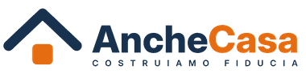

C.F. e P.IVA 04724830619 · REA CE-349941
PEC palumboinvestment@pec.it · anchecasa.it
Il listino AncheCasa e le provvigioni della rete
Quanto paga chi entra in AncheCasa, cosa è gratis e quanto guadagna la rete su ogni euro di utile.
Privato: tutto gratis
Ho un guasto, Trova artigiano, Ristruttura con AncheCasa, Il mio cantiere, piccoli lavori, bacheca, Check Bollette, offerte di luce, gas e telefono, mutui. Il privato porta le richieste: il guadagno arriva da aziende, fornitori e ristrutturazioni.
Artigiano
| Start | Pro | |
|---|---|---|
| Al mese | 19,90 € | 39 € |
| All'anno | 199 € | 390 € |
| Per lavoro fatto | 5,90 € normale · 9,90 € urgente. Solo se il cliente conferma il lavoro. | |
| Prova | 30 giorni gratis e i primi 3 lavori senza costo. | |
| Cosa c'è | Ho un guasto una richiesta alla volta, recensioni, garanzia 30 giorni, profilo verificato. | Tutto Start, più vetrina, rapportini, magazzino e precedenza a parità di distanza e voto. |
Impresa edile, subappaltatore, impiantista
| Impresa | Impresa Completa | |
|---|---|---|
| Al mese | 69 € | 149 € |
| All'anno | 690 € | 1.490 € |
| Prova | 14 giorni gratis. Visura e DURC prima di ricevere lavori. | |
| Cosa c'è | Lavori affidati da AncheCasa, piccoli lavori della zona, cantieri e richieste alle aziende della zona, Cerca subappaltatori, profilo verificato. 0% di commissione sui lavori tra aziende. | Tutto Impresa, più Pacchetto Cantiere e Gare Pro, fino a 10 utenti. |
Moduli a pagamento
| Modulo | Al mese | All'anno |
|---|---|---|
| Pacchetto Cantiere SAL, presenze, squadre, mezzi, magazzino, rapportini. Fino a 10 utenti, poi 5 € a utente. | 79 € | 790 € |
| Cerca gare Le gare di AncheBandi per zona, parola e categoria, con avvisi. | 29 € | 290 € |
| Gare Pro Cerca gare più Le mie gare: stato, documenti, scadenze, ribasso, esito. | 49 € | 490 € |
| Predict In arrivo Il ribasso consigliato, sopra Gare Pro. | +79 € | +790 € |
| AncheBIM In arrivo Controllo dei disegni. | 49 € a utente | 490 € a utente |
Fornitori
| Famiglia | Abbonamento | A risultato |
|---|---|---|
| Luce e gas | 49 €/mese, facoltativo per i marchi grandi | Per contratto attivato: 25 € luce o gas, 45 € luce più gas, 70 € business |
| Telefonia | 49 €/mese | Fibra 40 €, mobile 10 € a SIM, business 60 € |
| Finanza e assicurazioni | 99 €/mese | Cifra fissa per richiesta: mutuo 60 €, prestito 20 €, polizza 15 € |
| Materiali edili | 99 €/mese a provincia, 199 € la regione | Nessuna percentuale |
| Noleggio | 99 €/mese a provincia | Nessuna |
| Servizi per la casa | 49 €/mese | Nessuna |
| Informatica e promozione | 99 €/mese | Nessuna |
Prova: 30 giorni gratis. Contratto annuale senza rinnovo automatico.
Sponsor e altri profili
- Grandi città: 249 €/mese
- Capoluoghi medi: 149 €/mese
- Province piccole: 99 €/mese
- Al massimo 2 sponsor per zona: ricevono per primi le richieste e stanno in cima alla bacheca
- Annuncio in evidenza: 9,90 € per 30 giorni
- Studio tecnico: 49 €/mese
- Consulenti: 39 €/mese
- Agenzia immobiliare: 59 €/mese
- Committente: gratis, Pro 39 €/mese
Le ristrutturazioni di AncheCasa
AncheCasa fa il preventivo, firma con il cliente e affida il lavoro alle imprese. Il guadagno è l'utile del cantiere.
Le provvigioni della rete
La rete prende una quota dell'utile di AncheCasa, non dell'importo pagato dal cliente. Le quote sono fisse per tutta la durata del contratto e valgono anche sui rinnovi.
| Su cosa | Alla rete | Come si calcola l'utile |
|---|---|---|
| Software abbonamenti, moduli, costo per lavoro, sponsor | 35% | Incassato senza IVA, meno le commissioni di pagamento, meno il 25% per i costi del software. |
| Tutti gli altri servizi luce e gas, telefonia, fornitori, finanza, servizi per la casa | 35% | Incassato senza IVA, meno il 15% per i costi di gestione. |
| Ristrutturazioni e cantieri | 40% | Incassato senza IVA, meno imprese, materiali, sicurezza, spese tecniche e pratiche. Le spese generali di AncheCasa non si tolgono. |
Le provvigioni maturano solo su quello che AncheCasa incassa davvero. Sui cantieri: 30% alla firma, 30% a metà lavori, 40% al collaudo. Sui servizi acquistati dai clienti privati non ci sono provvigioni: si guadagna sui loro lavori.
Tre esempi con i numeri
| Esempio | Utile di AncheCasa | Alla rete | A chi porta il cliente (70%) |
|---|---|---|---|
| Un'impresa a 69 €/mese 69 € − 1,30 € commissioni − 17,25 € software | 50,45 € | 17,66 € al mese | 12,36 € al mese, 148 € l'anno |
| Un contratto luce e gas business, 70 € 70 € − 10,50 € gestione | 59,50 € | 20,83 € | 14,58 € |
| Una ristrutturazione da 40.000 € (IVA esclusa) | |
|---|---|
| Costi del cantiere | 32.400 € (imprese, materiali, sicurezza, pratiche) |
| Utile | 7.600 € (19%) |
| Alla rete, 40% | 3.040 €: chi segnala 304 €, chi chiude 760 €, chi segue il cantiere 912 €, chi ha portato l'impresa 304 €, sviluppo rete 364,80 €, capo area 243,20 €, Rete Italia 152 € |
| Resta ad AncheCasa | 4.560 €, prima dei contributi |
Chi fa tutto da solo (segnala, chiude e segue) prende 1.976 € su questo lavoro.